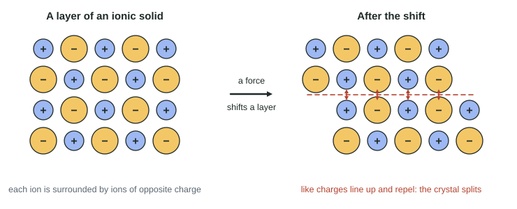

Structure of Ionic Solids
An ionic solid is a lattice of alternating cations and anions in which every ion is attracted to its oppositely charged neighbors.
Part 1 · Hook
Why this matters
Part 2 · Before you start
What this builds on
Part 3 · Prerequisite check
Quick check before you start
1. Which pair of ions attracts more strongly, at the same distance apart?
- Ca²⁺ and O²⁻
- Na⁺ and Cl⁻
- K⁺ and Br⁻
- They attract equally
Show the answer
Coulomb's law: the attraction grows with the product of the charges, 4 for Ca²⁺ and O²⁻ against 1 for the others.
- Correct: Ca²⁺ and O²⁻:
- Na⁺ and Cl⁻:
- K⁺ and Br⁻:
- They attract equally:
2. An ionic bond forms between
- a cation and an anion, usually from a metal and a nonmetal
- two nonmetal atoms sharing a pair of electrons
- metal cations and a sea of electrons
- two identical atoms
Show the answer
The metal gives up electrons and the nonmetal takes them; the ions attract.
- Correct: a cation and an anion, usually from a metal and a nonmetal:
- two nonmetal atoms sharing a pair of electrons:
- metal cations and a sea of electrons:
- two identical atoms:
Part 4 · See it
See it first

Part 5 · Step by step
How it works, step by step
- Cations and anions attract every nearby ion of opposite chargethey settle in a repeating three-dimensional lattice, each ion surrounded by opposite charges
- Every ion is held by several strong Coulombic attractionsa lot of energy is needed to free the ions, so the melting temperature is high
- Larger charges and smaller ions give stronger attractionsthe lattice energy and melting temperature are larger (MgO far above NaCl)
- A force shifts one layer of ionslike charges line up and repel, so the solid is brittle
- The ions are fixed in the solid but free to move when melted or dissolvedthe solid does not conduct, but the melt and the solution do
Part 6 · Key ideas
Key ideas
- An ionic solid is a repeating 3-D array of cations and anions; each ion is surrounded by opposite charges. There are no separate molecules.
- Lattice energy grows with ion charge and shrinks with distance (Coulomb's law). Compare charges first, then sizes, for both compounds.
- Strong attractions throughout the lattice give high melting temperatures and hardness.
- Ionic solids are brittle: a shifted layer puts like charges side by side.
- Ions carry the current: solid, no electrical conductivity; melted or dissolved, good conductivity.
Part 7 · Misconception
A common mistake
The wrong idea: Solid sodium chloride is made of NaCl molecules, each one Na⁺ stuck to one Cl⁻.
What actually happens: Each Na⁺ is surrounded by six Cl⁻ ions and attracted to all of them equally, and each Cl⁻ by six Na⁺. The formula NaCl gives the 1 : 1 ratio of ions in the lattice, not a molecule.
Part 8 · Check yourself
Check yourself
Exam-style questions. Anything you miss goes into your review queue.
Data table
Five ionic compounds
Ionic radii, the distance between neighboring ion centers in the solid, and melting temperatures for five ionic compounds.
| Compound | Cation (radius, pm) | Anion (radius, pm) | Cation–anion distance (pm) | Melting temperature (°C) |
|---|---|---|---|---|
| NaF | Na⁺ (102) | F⁻ (133) | 231 | 993 |
| NaCl | Na⁺ (102) | Cl⁻ (181) | 282 | 801 |
| KCl | K⁺ (138) | Cl⁻ (181) | 315 | 770 |
| MgO | Mg²⁺ (72) | O²⁻ (140) | 210 | 2852 |
| CaO | Ca²⁺ (100) | O²⁻ (140) | 240 | 2613 |
1. Which statement best explains why NaF melts at a higher temperature than NaCl?
- F is more electronegative than Cl, so it holds the shared electrons more tightly
- F⁻ is smaller than Cl⁻, so the ions are closer and attract more strongly
- NaF has a smaller molar mass, and lighter compounds have higher melting temperatures
- F⁻ has a larger charge than Cl⁻, so its attraction to each Na⁺ ion is stronger
Show the answer
Both compounds have ions of charge 1+ and 1−. F⁻ (133 pm) is smaller than Cl⁻ (181 pm), so the ion centers are closer (231 against 282 pm). By Coulomb's law the attraction is stronger, the lattice energy is larger, and more energy is needed to melt the solid.
- F is more electronegative than Cl, so it holds the shared electrons more tightly: NaF is ionic: no electrons are shared between Na and F. Compare the ions' charges and the distance between them.
- Correct: F⁻ is smaller than Cl⁻, so the ions are closer and attract more strongly: Right: same charges, shorter distance, stronger attraction.
- NaF has a smaller molar mass, and lighter compounds have higher melting temperatures: Mass does not set melting temperatures of ionic solids; the Coulombic attraction between the ions does. MgO is lighter than CaO and also higher-melting, but because of distance, not mass.
- F⁻ has a larger charge than Cl⁻, so its attraction to each Na⁺ ion is stronger: F⁻ and Cl⁻ have the same charge, 1−. The difference is size.
2. MgO and NaF have ions about the same distance apart, yet MgO melts about 1900 °C higher. Which explanation is best?
- MgO has more ions per formula unit than NaF, so there are more bonds to break
- Mg²⁺ is smaller than Na⁺, so the MgO ions are much closer together than the NaF ions
- O is less electronegative than F, so MgO is a more ionic compound overall than NaF
- Mg²⁺ and O²⁻ have twice the charges of Na⁺ and F⁻, so they attract far more strongly
Show the answer
The distances are close (210 and 231 pm), so the main difference is charge: 2+ and 2− against 1+ and 1−. The product of the charges is 4 against 1, so by Coulomb's law the attraction, and the lattice energy, are several times larger.
- MgO has more ions per formula unit than NaF, so there are more bonds to break: Both have two ions per formula unit (Mg²⁺ + O²⁻, Na⁺ + F⁻).
- Mg²⁺ is smaller than Na⁺, so the MgO ions are much closer together than the NaF ions: Mg²⁺ is smaller, but the distances differ only by about 10% (210 against 231 pm); that cannot explain a 1900 °C difference on its own. The doubled charges do.
- O is less electronegative than F, so MgO is a more ionic compound overall than NaF: A smaller electronegativity difference would make a bond less ionic, not more. The difference comes from the ions' charges.
- Correct: Mg²⁺ and O²⁻ have twice the charges of Na⁺ and F⁻, so they attract far more strongly: Right: the charge product (4 against 1) dominates.
Particle view
Sodium chloride in three states
3. Which box represents solid sodium chloride?
- Box 3
- Box 2
- Box 1
- Box 1 and Box 3
Show the answer
In the solid the ions sit in a repeating three-dimensional array, each ion surrounded by ions of opposite charge. Box 1 shows one layer of that.
- Box 3: Box 3 shows separate Na–Cl pairs, as if NaCl were made of molecules. An ionic solid has no separate pairs: each ion attracts all its neighbors.
- Box 2: Box 2 shows ions spread out without a regular pattern, which is the melted (liquid) salt.
- Correct: Box 1: Right: alternating ions in a regular array.
- Box 1 and Box 3: Box 3 is not a correct model of an ionic solid; only Box 1 is.
4. The substance in Box 2 conducts electricity but the substance in Box 1 does not. Which explanation is correct?
- Box 2 has more ions than Box 1, so it can carry a much larger current
- In Box 2 the electrons are free to move, as in a metal, but in Box 1 they are not
- In Box 2 the ions can move and carry charge; in Box 1 they are held in place
- Box 1 is made of neutral atoms, while Box 2 is made of charged ions
Show the answer
Charge is carried in an ionic compound by moving ions. When the solid melts (Box 2) the ions can move past each other toward the oppositely charged ends of the circuit. In the solid (Box 1) the same ions are locked in the lattice.
- Box 2 has more ions than Box 1, so it can carry a much larger current: Box 2 in fact shows fewer ions than Box 1. The number of ions is not the issue; whether they can move is.
- In Box 2 the electrons are free to move, as in a metal, but in Box 1 they are not: Melted salt does not contain free electrons; the moving charges are the Na⁺ and Cl⁻ ions themselves.
- Correct: In Box 2 the ions can move and carry charge; in Box 1 they are held in place: Right: mobile ions carry the current.
- Box 1 is made of neutral atoms, while Box 2 is made of charged ions: Box 1 also contains ions. They just cannot move.
5. What is wrong with Box 3 as a model of solid sodium chloride?
- It shows separate pairs, but each ion attracts several opposite-charge neighbors
- It shows the wrong ratio of ions: solid sodium chloride has two Cl⁻ ions per Na⁺ ion
- The ions should be drawn the same size, because Na⁺ and Cl⁻ have the same number of electrons
- Nothing is wrong: an ionic compound is made of molecules, each one cation and one anion
Show the answer
NaCl is a lattice, not a collection of molecules. Each Na⁺ is surrounded by several Cl⁻ ions (and each Cl⁻ by several Na⁺), all attracting it; no Cl⁻ belongs to one particular Na⁺. The formula NaCl gives the 1 : 1 ratio, not a molecule.
- Correct: It shows separate pairs, but each ion attracts several opposite-charge neighbors: Right: the attraction extends through the whole array.
- It shows the wrong ratio of ions: solid sodium chloride has two Cl⁻ ions per Na⁺ ion: The ratio in Box 3 is 1 : 1, which is correct for NaCl; the problem is the isolated pairs.
- The ions should be drawn the same size, because Na⁺ and Cl⁻ have the same number of electrons: Na⁺ has 10 electrons and Cl⁻ has 18, and Cl⁻ is in fact larger. The drawing gets the sizes right.
- Nothing is wrong: an ionic compound is made of molecules, each one cation and one anion: This is the misconception the item targets: ionic compounds do not form discrete molecules.
6. A crystal of salt shatters when struck with a hammer. Which explanation is best?
- Salt is held together by weak forces that are easily overcome by a sharp force
- The blow breaks the covalent bonds between the sodium and chlorine atoms
- The blow knocks electrons off the ions, so the crystal is no longer held together
- The blow shifts a layer of ions so that like charges line up and repel
Show the answer
In the crystal each ion has opposite-charge neighbors. A small shift of one layer brings cations beside cations and anions beside anions; the repulsion pushes the layers apart and the crystal splits. This is why ionic solids are brittle.
- Salt is held together by weak forces that are easily overcome by a sharp force: The attractions in an ionic solid are strong: salt melts at 801 °C. It is brittle because shifting a layer creates repulsion, not because the forces are weak.
- The blow breaks the covalent bonds between the sodium and chlorine atoms: NaCl is held by ionic bonds between ions, not by covalent bonds.
- The blow knocks electrons off the ions, so the crystal is no longer held together: The ions keep their electrons; the crystal splits because of how the ions are rearranged.
- Correct: The blow shifts a layer of ions so that like charges line up and repel: Right: like charges line up and repel.
7. Which compound is expected to have the largest lattice energy?
- MgCl₂
- Al₂O₃
- NaBr
- KI
Show the answer
Al³⁺ (3+) and O²⁻ (2−) give the largest charge product, and both ions are small. Coulomb's law predicts the strongest attraction; aluminum oxide melts above 2000 °C.
- MgCl₂: Mg²⁺ has a 2+ charge, but Cl⁻ is only 1− and larger than O²⁻.
- Correct: Al₂O₃: Right: the highest charges with small ions.
- NaBr: Both ions are singly charged, and Br⁻ is large.
- KI: Both ions are singly charged and both are large, so KI has the smallest lattice energy of the four.
Part 9 · Summary
Summary
Part 10 · Up next
What comes next
Part 11 · Connections